Meghan
Kulkarni.
Case Studies
Cassini & Internal Knowledge Engine
Cassini
Large organizations can lose up to $33,000 a minute when IT outages and incidents occur
Ticket resolution pre-Cassini
Before Cassini, resolving a single IT ticket meant bouncing between four disconnected tools with no way to surface related context.
occurs
created
together
made
The problem isn't that I don't trust the AI. It's that when it flags something, I have no way to verify it quickly. I'll spend 20 minutes digging through logs trying to understand what it saw that I didn't. If it just showed me the reasoning, I'd approve or reject in two minutes.
We had an incident last quarter that a smarter pre-approval check would have caught. The change looked routine on paper. Nobody connected it to three other tickets that had failed in the same environment two weeks prior. That context exists, we just had no way to surface it in time.
I don't need a dashboard. I need the right information at the moment I'm making a decision. Right now I'm switching between four different tools to get a full picture of one ticket. That's where the time goes.
What I really want to know is how many steps away this ticket is from something that already went wrong. If this change touches the same service as an incident from last week, I need to see that connection immediately, not piece it together myself after the fact.
Users couldn't distinguish high-risk tickets from routine ones without manually digging through metadata. Reviewers were rubber-stamping to clear the queue, not because they were careless, but because the system gave them no way to triage quickly.

Multiple users described the same gap: no way to see how a change was connected to prior incidents or other in-flight tickets. Context that existed in the system was invisible at decision time.
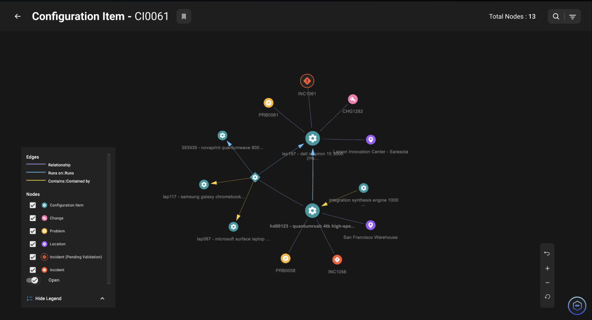
When an incident occurred, the path to resolution required too many manual steps and too much context-switching. Users stalled at multi-select flows that forced decisions the system already had the data to make.
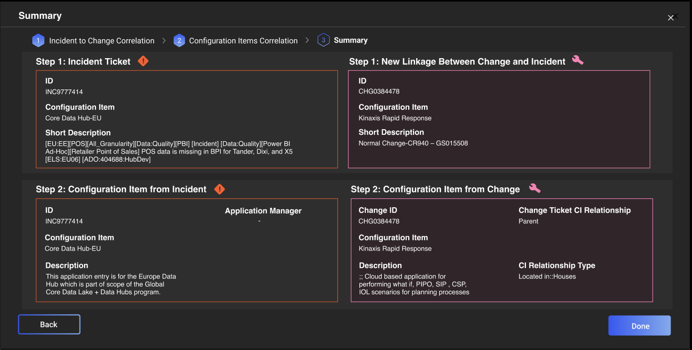
AG Grid let us quickly prototype and test table layouts before building a custom solution.
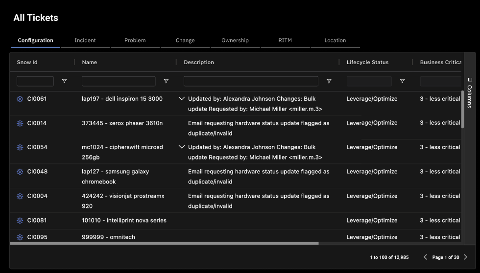
We focused on one ticket type — Incidents.
The scope expanded to seven. Every ticket type connected back to Incidents — Changes that caused them, Problems that explained them, Configuration items that contained them. Each had its own rules, its own metadata, its own user expectations.
The challenge: one experience, seven mental models, zero cognitive overhead.
ITSM Ticket Type Relationships
While requirements were still being collected and priorities were shifting, I ran a lo-fi prototype in parallel — a working tool to pressure-test ideas with engineers, PMs, and the client.
Because of tight sprint timelines and ambiguous requirements, features were built across 3 different component libraries. As a whole, the application did not look cohesive.
I proposed a redesign of the application to not just "make it work" but also "make it make sense." I built Paradigm + V2 in parallel with the Redesign.
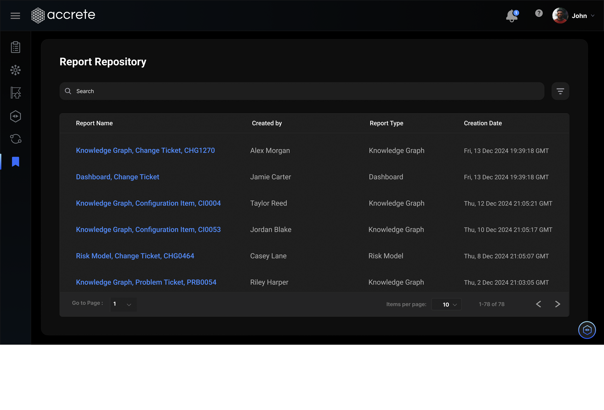
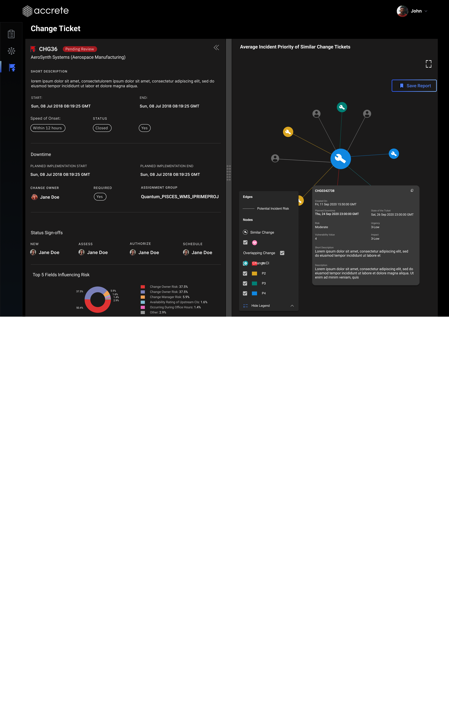
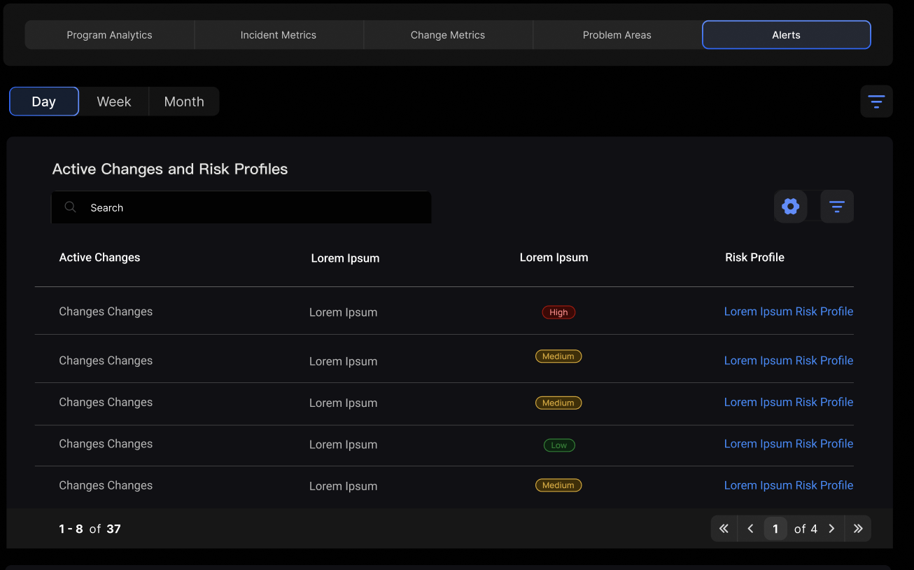
Paradigm Design System components were created and pushed into the system on a need-basis.
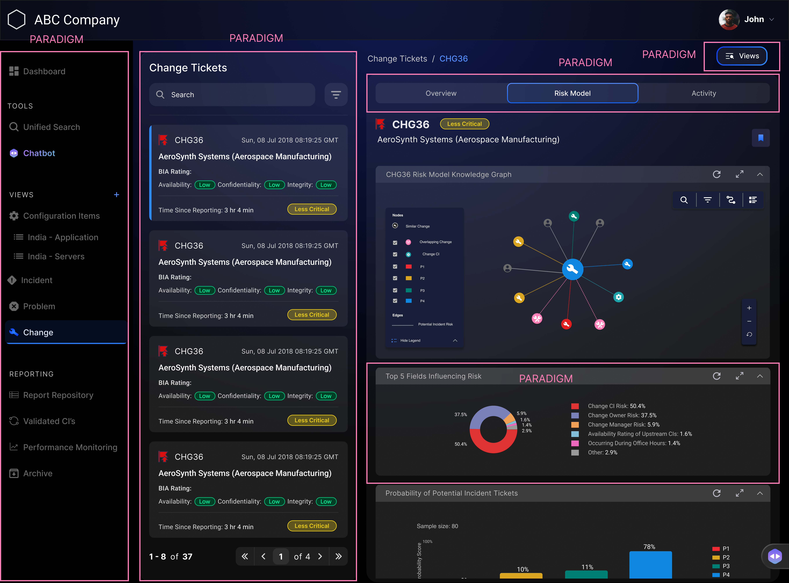
The client wanted a fully interactive Gantt Chart surfacing every overlap, but engineering flagged it as too complex. Conversations with IT revealed users only needed to see the timeline, not manipulate it—read-only visibility was enough. The Dashboard we designed solved for this by pinpointing and surfacing only the most critical incidents upfront, using color to highlight overlaps and severity. This approach prioritized speed and clarity, reducing cognitive load by curating only the most actionable information and compressing the path from alert to action.
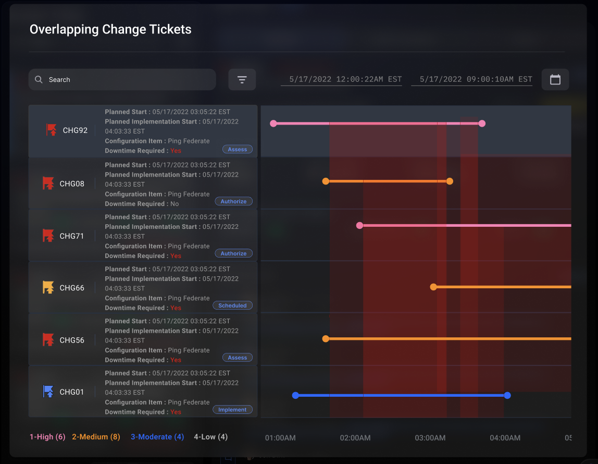

The information I need is all there. I just have to click through three levels to get to it. By the time I’ve found what I’m looking for, I’ve lost the context I started with.
Every ticket type works differently but they all look the same. I have to remember which rules apply to which. That’s mental overhead I shouldn’t have to carry.
As a power user I’m managing across everything: incidents, changes, configurations. I need one place where I can see what’s moved, what’s pending, and what needs my attention. Right now that doesn’t exist.
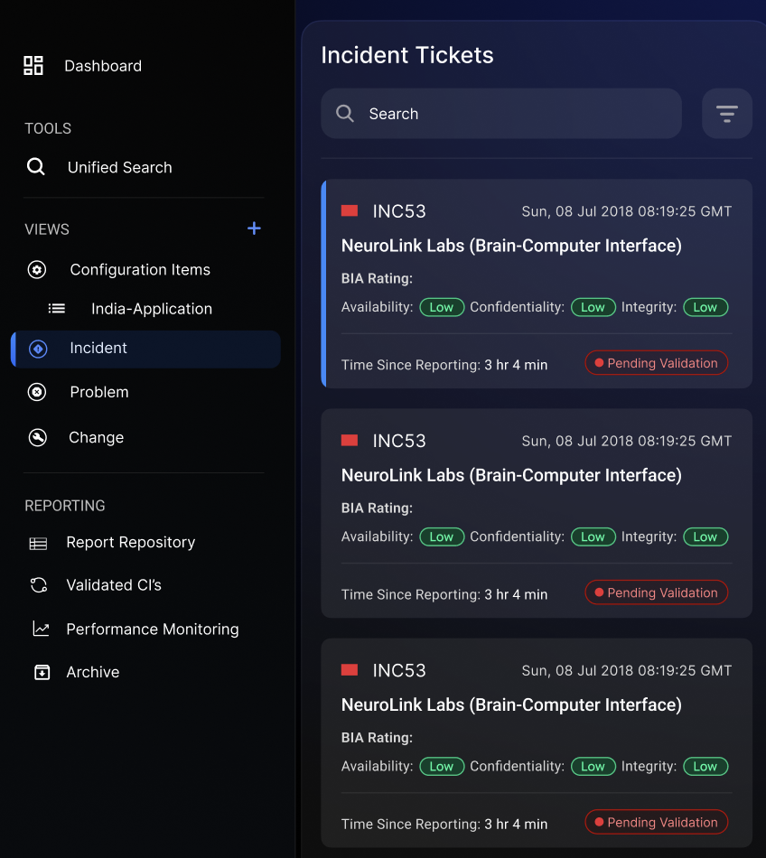
- 47s avg nav time (baseline)
- 38% reduction in time on task
- 52% drop in mid-flow abandonment
- 41% error reduction
- Task completion 61% to 89%
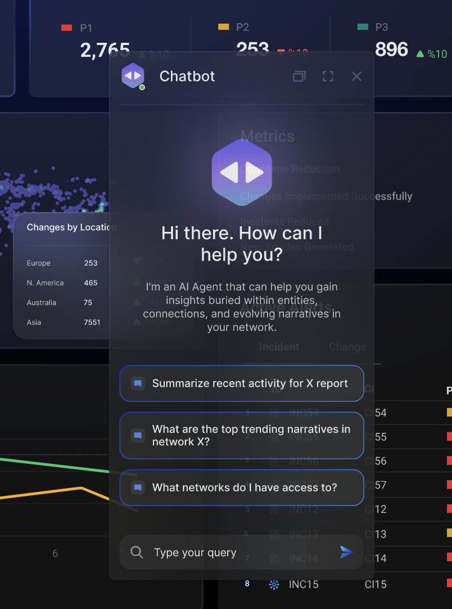
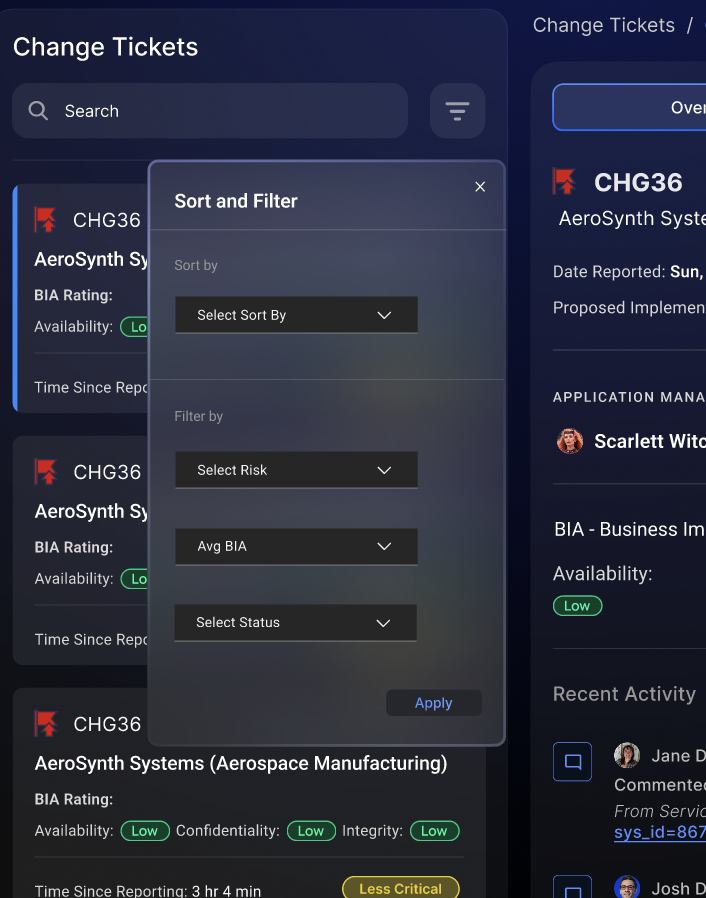
Internal Knowledge Engine
How can organizations enable smarter and faster decision-making?
Accrete AI built IKE because they were living the problem. Knowledge was buried in inboxes, scattered across tools, and locked in people's heads — smart people were making slower decisions, not from a lack of information, but because they couldn't find it fast enough.
Starting by listening
I interviewed people across Finance, Sales, Marketing, and Engineering — not to validate assumptions, but to understand what a day actually looked like. I shadowed workflows, watched where people got stuck, and asked what they wished they could do.
“We have millions of documents sitting across systems and no way to know which ones are actually relevant to a decision we’re making right now. By the time someone finds the right information, the window has closed.”
“Sales moves fast. But our knowledge doesn’t keep up. By the time I find the right case study or competitive intel, the conversation has already moved on.”
“We produce so much content but there’s no single place to find what’s actually been used and what worked. Marketing is constantly recreating things that already exist.”
Employees don't know what they don't know. How do you surface relevant knowledge without requiring the perfect search query?
Different roles need different knowledge. An engineer and a salesperson asking the same question may need very different answers.
How do you design access controls that don’t create friction for legitimate use cases?
How do you show where an answer came from so users can verify it?

Dedicated environments per department — each group gets a context tailored to their role and function.

Users upload documents to train the LLM — producing accurate, role-specific output with traceable sourcing.

Visualizes degrees of separation between data, documents, and queries — surfacing connections a simple search would miss.

Admins connect sources like Jira and Confluence and restrict access per workspace — without blocking legitimate use.
Didn’t want to pick an agent — just wanted to speak and let IKE route it.
Couldn’t see where answers came from, so they went back to the original doc anyway.
Wanted to correct IKE’s output, not just read it. When they couldn’t, they disengaged.
Talking to IKE
Verifying where answers come from
Correcting output
Let's build
cool stuff!
Meghan Kulkarni · Product Designer